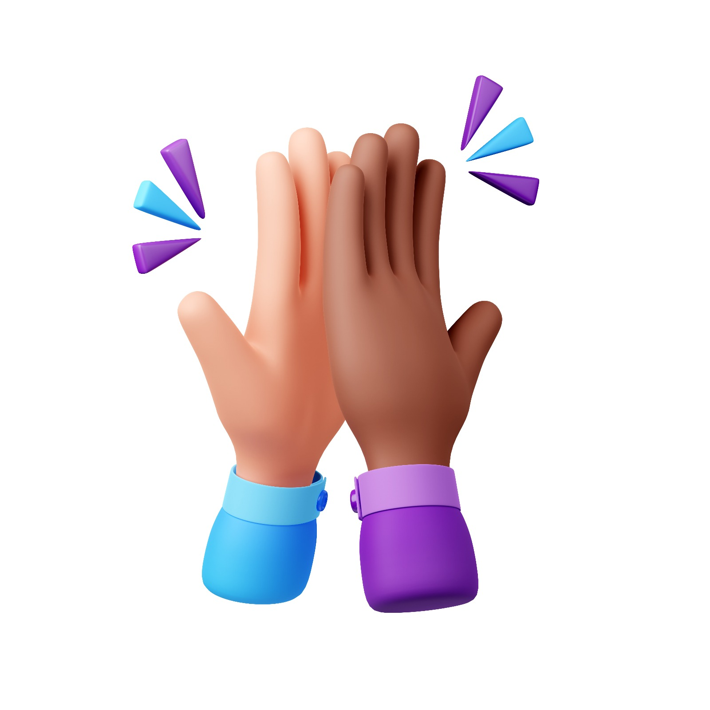
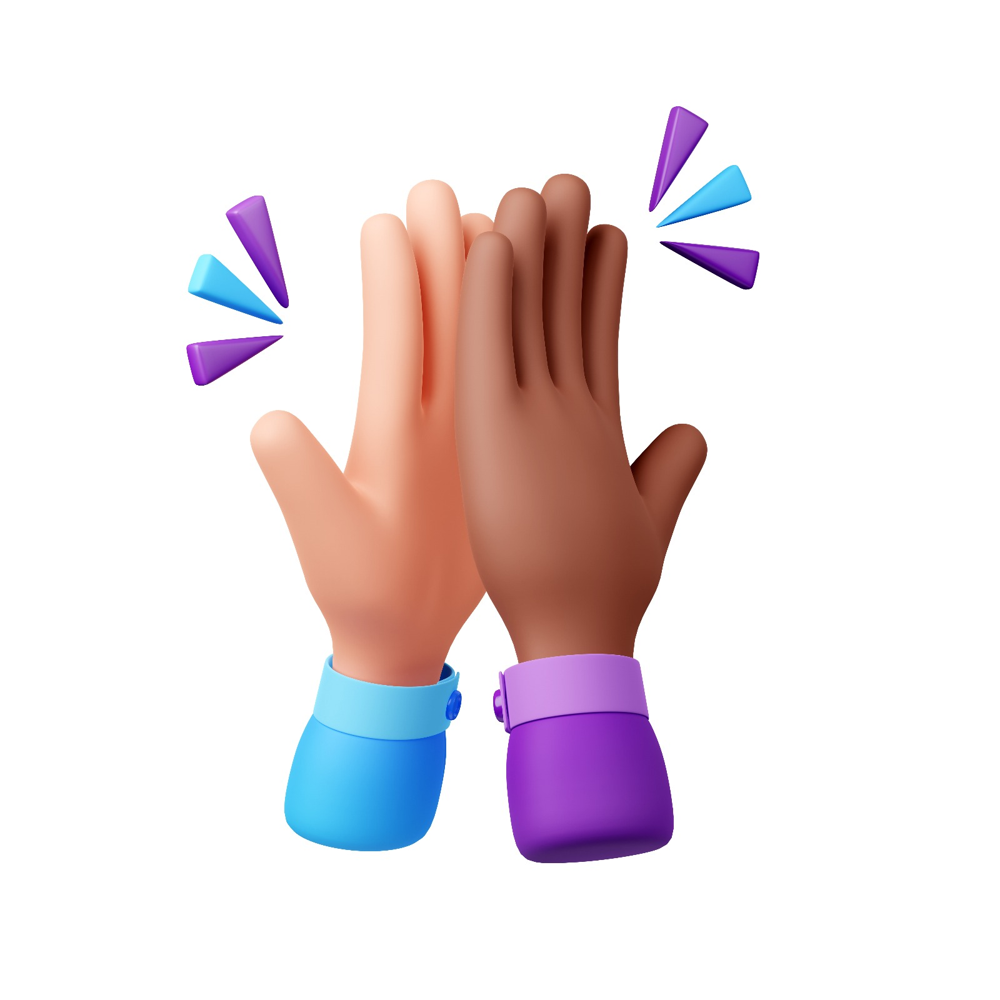

Élèves et éco-délégués
Ils mènent des enquêtes, testent des usages libres et proposent des pistes pour un numérique plus sobre.
Beaucoup d’établissements restent dépendants de grandes plateformes et d’un matériel vite déclaré “obsolète”. NIRD propose une alternative fondée sur le libre, le réemploi et la sobriété. Notre site explique comment gérer cette obsolescence et passer à l’action.
Crée ta carte-compétences et vois ton trait de personnalité.
 

NIRD est porté par la Forge des communs numériques éducatifs et s'appuie sur un réseau d'acteurs dans et autour de l'école.
Ils mènent des enquêtes, testent des usages libres et proposent des pistes pour un numérique plus sobre.
Ils intègrent la démarche NIRD dans les cours, les projets, les clubs, et partagent leurs retours d'expérience.
Associations, collectivités et services techniques accompagnent la transition : matériel reconditionné, hébergement local, formations…
Pour parler de réemploi et d'obsolescence programmée, il faut voir ce qui se cache derrière la coque. Le modèle 3D de la page d'accueil sert de point de départ pour identifier les grandes familles de composants.
Dans l'application finale, cette vue peut servir d'entrée vers des fiches pédagogiques, des mini-jeux ou des scénarios de réparation.
il s’agit d’amener chaque établissement, quel que soit son niveau de maturité numérique, vers des pratiques plus inclusives, plus responsables et plus durables. L’objectif : comprendre, choisir et agir.
Identifier les obstacles actuels : dépendances à des plateformes non maîtrisées, difficultés d’accès aux outils, matériel remplacé avant d’être réellement obsolète. L’inclusion consiste à redonner du contrôle, à réduire les barrières, et à permettre à chacun de comprendre et d’utiliser le numérique de façon autonome.
Montrer qu’il existe d’autres modèles : logiciels libres, souverains et pérennes, démarches de réemploi, choix techniques qui respectent la vie privée et les données. Il s’agit d’adopter des pratiques éthiques en cohérence avec les valeurs éducatives et de découvrir des initiatives NIRD déjà actives dans d'autres établissements.
Concrétiser la transition : ateliers de réparation, analyse du parc, optimisation des usages, projets de classes autour du recyclage numérique. La plateforme doit proposer des pistes d’actions simples, visibles, et immédiatement applicables.